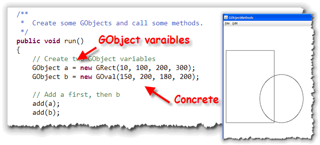
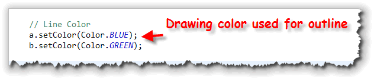
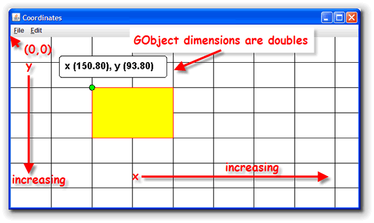
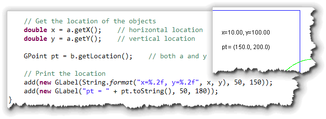
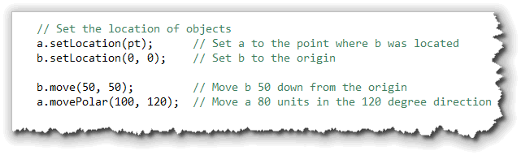
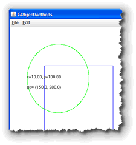
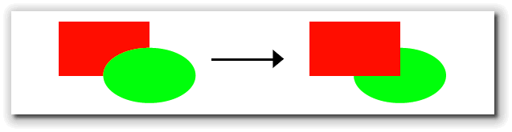
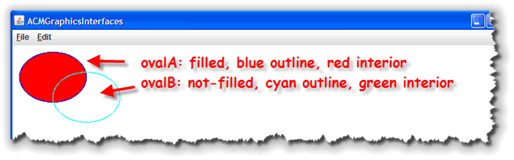

Now that you know how to create an
ACM
Now that you know how to create an
ACM GraphicsProgram,
let's take a look at some of the different components,
from the hierarchy of ACM classes on the right, that you
can use to create your own masterpieces. Since there
are so many classes, though, we'll only cover a few.
We looked at the GLabel class in the last chapter.
In this chapter we want to look at:
- the
GObjectclass that provides the basic behavior that all graphical objects share. - the
GImageclass that allows you to display JPEG and GIF images in your programs. - the
GFillable,GResizableandGScalableinterfaces that allow you to fill and size your shapes. - the classes that replace the primitive
Graphicsclass drawing operations you used in the last unit. This includesGLine,GRect,GOvalandGArc, as well as the ACM "measuring classes",GPoint,GRectandGDimension.
Let's start by looking at the GObject class first,
since it contains fields and methods that are common to
all of the other classes.
The ACM Graphics Class Hierarchy
As you know, similar classes are often placed in packages
in Java. Thus, to use the graphical objects in the ACM library,
you import the classes in the acm.graphics
package.
While packages are important to get your program to run, to really understand what an object can do, you have to understand its class hierarchy. A class hierarchy is based on the object-oriented facility known as inheritance, which you were introduced to earlier.
With inheritance, classes are arranged in a sort of
parent-child-grandchild structure, that looks a lot like the
taxonomies you'd meet in a biology class, and for much the
same reason. In the different "levels" have different names,
like "kingdom", and "phylum". In object-oriented programming,
we have a simpler set of terms.

Animals and Insects
Here's an example from the "real world." Suppose that all of the
animals in the world could be lumped together into the class
Animal. If we took all of the animals and divided
them into different groups, we might find that some were
mammals, (which we'd assign to the Mammal class),
some were insects, etc. Each of these groupings would be a
subset of the entire class of Animal.
Such a subset (Mammal, Insect,
Amphibian) is called a subclass, and, as
you might expect, the superset (Animal) is
called the superclass.
This relationship is called an is-a relationship because
if an object belongs to a subclass, (brenda and
jumbo in the Elephant class, for instance),
that object is simultaneously a member of each of all
its ancestor classes as well. Thus, we can say that
Jumbo "is-a" Elephant, but, by virtue of
being an Elephant, he is, simultaneously, a
Mammal and an Animal as well.
UML Notes
The diagram here is a simplified UML, or Unified Modeling Language
diagram. UML is the "blueprint" language for object-oriented programming.
The arrows in the diagram shown here specify
class relationships. The upward-pointing arrow going from
Insect, Mammal, and Amphibian,
says that these three classes are subclasses of Animal,
or, more technically, that Animal is a generalization
of the other three classes.
The dotted lines with the lighter arrowhead, connecting
jumbo and brenda with the Elephant
class indicate that jumbo and brenda are objects
created from the class. The «instanceOf»
notation appearing to the right of the lines is called a
stereotype and is a required part of the notation.
The GObject Class
With inheritance, all subclasses automatically inherit the behavior and attributes of their parent or superclasses. That means, if we have several classes that have a common method, or common attributes, we can place those methods and attributes in a superclass, and then they can be shared by all the descendent classes.
In the Java class libraries, the root class that all other
classes are derived from is named Object. Whenever you
create a new class, and don't have an extends clause
in the class header, your new class implicitly extends the
Object class.
 In a similar way, the
In a similar way, the GObject class is the root class
for the visible classes in the ACM Graphics package. It contains the
methods and attributes common to all of the visible graphical objects
you'll be using in this unit.
To illustrate each of these methods, I'll use a simple (and fairly useless) program named GObjectMethods that you'll find in this chapter's code folder.
Creating GObjects
The GObject class itself is abstract. That
means that your programs cannot actually create an instance
of the GObject class. Instead, your programs will
create objects from the concrete subclasses such as
GOval or GRect().
Even though you can't create GObject objects,
your program may create GObject variables,
as long as they refer to an object created using one of the
subclass constructors, like this:

When you pass theGObject variables a
and b to the GraphicsProgram's
add() method, each individual shape object is
placed on the surface of the program's central canvas, like
this.
When you do this, you can use any of the GObject
methods with the variables a and b.
You cannot, however, use any methods that are specific to the
GRect or GOval classes, even though
a refers to a GRect object and
b refers to a GOval object.
You can also create methods that take GObject
parameters, and then pass any kind of ACM graphical
object to it like this:
public void center(GObject obj) ...
Drawing Colors
Some graphical object represent closed shapes, like rectangles
and ovals, while some are not closed, like lines. Those that
are closed can be filled with a solid color. Since not all
objects can be filled, though, the GObject class
does not have a setFillColor() method.
All graphical objects can change the color used to draw
their outline, however. You change that by using the setColor()
method like this:

The ACM graphical shapes do not havesetBackground()
and setForeground() methods, like the traditional
Java component system has. However, you can add an init()
method to your GraphicsProgram, and call its
setBackground() method to change the background color
for the canvas used by your program.
The Color class is not one of the ACM graphics
classes, so to use the class in your program, you need to remember
to add one of these two import statements to your
code:
import java.awt.*; // import all AWT classes
import java.awt.Color; // import the Color class
GObject Coordinates
ACM Graphics objects use the same basic coordinate system that
you met earlier, when you learned about applets. Like
applets, the origin (position 0, 0) is in the upper left
corner. X, or horizontal locations increase as you move to the right,
while Y, or vertical locations increase as you move down. (Remember
that this is a little different than the Cartesian coordinates
you learned in geometry!)

Each x,y coordinate pair represents a pixel on the screen. However, with ACM graphical objects, this coordinate pair is stored asdouble values, instead of the
ints used in the traditional Java graphics model.
ACM GObjects all store their location, width and
height as doubles. When the different objects are
actually drawn on-screen, though, each of these values is
automatically converted to an int, because we
can't actually paint a line that falls between two pixels
on the screen.
You normally won't need to worry about this difference at all;
the only practical effect is to reduce the amount of work that
you have to do when a shape calculation involves double
values (which is extremely common when using the Math
functions.).
Measuring Classes
In a previous chapter, you met the three Java AWT "measuring"
classes: Point, Dimension and
Rectangle. Each of these three simple classes
contains public int fields that are used to
measure the size of a graphical component, such as the
width and height of the screen.
Since ACM GObjects use double
coordinates, the ACM graphics package also includes replacements
for these three classes. The replacement
classes—GPoint, GDimension and
GRectangle—are identical to the other
measuring classes except that their fields are doubles
not ints.
Location
There are a variety of methods that allow you to change the size and location of an object, as well as those that allow you to retrieve the location or size of an object.
There are three methods that will get the 2-dimensional coordinates
or location of an object:

As you can see, we can get the individual coordinates asdoubles, or both together as a GPoint.
To display the GPoint, the example here just uses
its toString() method.
There are four methods to change the location of an
object in the two-dimensional plane:

Here's what the methods do:
- The
setLocation(x, y)andsetLocation(p)methods both move the object to the absolute position specified by theirdoubleorGPointparameters. In the example here,a.setLocation(pt)moves theGObject a(the rectangle), down so that it has the same origin as the oval. The lineb.setLocation(0, 0);moves the oval (b) to the upper-left corner. - The
move()andmovePolar()methods use the object's current position when calculating its final resting place. In the example here,b.move(50, 50);adds 50 to both thexandyfields in the oval object,b. The linea.movePolar(100, 120);moves the rectangle 100 units toward the origin, which is (roughly) 120 degrees.
Once these lines have run, the objects should be located on the canvas in this position. (Note that the location printed on the canvas is for the original location, not the updated location.)
Z Order
There are also four methods that allow you to change the location of the object in the depth or "Z" dimension. This is known as the object's stacking order.
obj.sendToFront(); // put in front of all other objects
obj.sendToBack(); // put behind all other objects
obj.sendForward(); // move one layer closer to user
obj.sendBackward(); // move one layer further from user
Obviously, with a 2-dimensional display, you can't actually change the depth of any object. What you can adjust, however, is the object's apparent location, by changing the overlapping of different objects as they are drawn. Those objects that are "closer" to the viewer are drawn "on top" of those that appear further away.
Here's a picture from the ACM JTF Tutorial, showing what would
happen if you used the statement oval.sendBackward();
to the picture below:

Shape Size
Finally, there are four methods that allow you to obtain the
size of an object:
 Here's how these methods work:
Here's how these methods work:
- The
getHeight()andgetWidth()methods return the height and width of the object as adouble. - The
getSize()method returns both the width and height, wrapped up in aGDimensionobject. - The
getBounds()method returns the size of the object, as well as its location, all wrapped up in aGRectangleobject.
Resizable, Scalable and Fillable
Note that while there are methods to change the
location of an object, there are no methods to change
the size of an object. Just as only some objects are
"fillable", only some objects are "scalable" and "resizable".
Since these are capabilities that not all objects have,
the GObject class does not contain any methods
to perform these operations.
- Three of the shape classes in the ACM Graphics
package—
GRect,GOvalandGImage—can be resized. - These three
classes, and four others—
GArc,GCompound,GLineandGPolygon—can also be scaled. - Finally, five classes—
GArc,GOval,GPen,GPolygonandGRect—are also fillable.
Each of these capabilities is defined by an interface that these different classes implement. An interface is a way of defining the behavior or methods that a class contains, without defining the family of classes that it belongs to. You'll study interfaces a little later in the semester.
Right now, we'll look at the methods defined in each of these interfaces, using a small sample program named ACMGraphicsInterfaces.java, located in this chapter's code folder.
The GFillable Interface
The classes that implement the GFillable interface
all have the ability to paint a solid center, using a separate
brush color. These include the closed shapes GRect,
GOval and GPolygon, as well as the
GArc and the free-hand drawing class, GPen.
If an object is fillable, you can specify whether the center should
be solid or hollow like this:
 The color used for the outline does not have to be the same as the
color used to fill the center of the shape.
The color used for the outline does not have to be the same as the
color used to fill the center of the shape.
- You met the
setColor()method earlier, which sets the outline color for allGObjects. In this example, the outline forovalAis drawn with a blue pen, while the outline forovalBis drawn with a cyan pen. - For fillable objects, the
setFillColor()method specifies the brush used to fill the interior of the shape. In this example,ovalAis filled with a red brush, whileovalBis filled with a green brush. - No matter what brush is used to fill the interior of the
object, it is only used if directed by calling the
setFilled()method, passingtrueas the parameter. If you don't do this, (or, if you callsetFilled(false), then the shape outline is drawn, but the center remains hollow, likeovalBin my example here.
Of course, if you want a solid, or non-outlined shape, just use
the same color for the outline as well as for the fill color.
Here's what this code looks like when it runs:

The GResizable Interface
Images, ovals and rectangles are all resizable. There are two
versions of two methods (for a total of four) defined in the
GResizable interface.
The setSize() methods allow you to change the
width and height of an existing object, but leaves the location
as it is. You can supply separate parameters for the width
and height, or a single parameter wrapped up in a
GDimension object:

If you want to change the location at the same time as you change
the size, then the two versions of setBounds() are
what you want:
oval.setBounds(0, 0, 100, 50); // Change location, width and height
oval.setBounds(newBounds); // newBounds is a GRectangle object
The GScalable Interface
While there are only three classes that are resizable, there
are a larger number of classes that can be resized by
scaling. Those classes that implement the GScalable
interface all contain a scale() method, which allows
the object to change its size by multiplying its width and height
by a scaling factor:
 There are two versions of the
There are two versions of the scale() method. If you
supply a single factor, them both height and width will be multiplied
by that factor. In the code above, ovalA is scaled to
50%, but the ratio between width and height remains the same.
In the case of ovalB, though, separate factors are
supplied for width and height. The width is multiplied by 1.5, and
the height is multiplied by 2.0, changing the shape of the
oval as well as its dimensions. To change only one of the
dimensions, use the two-parameter version of scale(),
but use 1.0 for the dimension you wish to remain fixed.
The TwoCards Project
To give you a quick flavor for some of the other classes
in the acm.graphics package, let's build a simple
program called TwoCards. Our program will:
- Display a dark-green "table" in the center of the application with a caption saying "Place your bets!" underneath it.
- Draw two playing cards on the table, one face up, and one face down.
- Flip over the face-down card and set it next to the face-up card when it's clicked with the mouse.
Here's a screen shot that shows the program when it
first loads (on the left), and a shot of the applet
after the user has clicked the face-down card:
 To start, create an ACM
To start, create an ACM GraphicsProgram named
TwoCards, following the same steps you followed for
MyFirstAcmGuiApp in the last chapter. Make sure you
save your file in the Chapter07 folder and import the
acm.program, acm.graphics and
java.awt packages. Place your
code in the run() method.
Part 1: The Table
To create the table, we'll use the GRect class.
GRect is one of the Fillable classes,
so you can specify an interior color that's different than
the background. We'll make our interior dark green.
 Start by defining a couple of constants,
Start by defining a couple of constants, T_WIDTH
and T_HEIGHT to represent the width and height of
our table (instead of using magic numbers).
Then, create
a GRect object named table using the
constructor. Use 0,0 for the origin, and pass your two constants
for the width and height like that shown in the screenshot.
Positioning
 To position the table, you'll need to subtract one-half its width
and one-half its height from the width and height of your program
itself. Remember, you can get those numbers by calling the
To position the table, you'll need to subtract one-half its width
and one-half its height from the width and height of your program
itself. Remember, you can get those numbers by calling the
getWidth() and getHeight() methods.
Then, use the setLocation() method to position the
table object in the center of the screen, like that
shown in this screenshot.
Color and Add
 To color our table, we need to do three things:
To color our table, we need to do three things:
- Use the
GRectmethodsetFillColor()to the background color we want for the table. I've used theColorconstructor to create a dark green felt color. - Send the
setFilled(true)message to the table to tell it to fill itself in when it's drawn. - Add the finished component to our program's canvas, so we can see it.
The screenshot shows the code for each of these steps.
Add a Caption
 Since we've already had experience using the
Since we've already had experience using the GLabel
class, you should be able to figure out how to add the
table caption so that its centered right underneath the
table itself.
The secret lies in figuring out where the bottom of the table is on the screen, and then adding the height of the caption itself to that number for the vertical position of the label.
The screenshot to the right shows what the calculations should look like.
Step 2: Drawing the Cards
The ACM GImage class allows you to easily display
and position objects created from standard JPEG and GIF images.
 For this problem, I've downloaded the GPL card images from
http://www.waste.org/~oxymoron/cards/ and placed them
in this week's download folder. You can use
these images without charge, but if you eventually create a
commercial product, you'll need to replace them with a different
set.
For this problem, I've downloaded the GPL card images from
http://www.waste.org/~oxymoron/cards/ and placed them
in this week's download folder. You can use
these images without charge, but if you eventually create a
commercial product, you'll need to replace them with a different
set.
Each card image is stored in a separate file, so they're fairly easy to manipulate. The two of Clubs is in the file 2c.gif, the Ace of Spades is in as.gif, and so on.
To make sure all of the filenames are only two characters long, the "tens" are in a set of files named like tc.gif instead of 10c.gif. Also, the file b.gif is used for the backs of the cards.
Card 1: The GImage Class
We'll need to create two cards for our program, so
I'll just name them card1 and card2.
To create the card objects, we'll use the GImage
class.

GImage actually hides a lot of complexity that
you'll be exposed to later. Right now, to construct your first
card object, simply pass it a String containing
the path to the image file you want to use. This path needs
to be relative to the location of your Java program.
Once you've created the card1 object, you can
position it with setLocation(). Rather than
calculating the location independently, we can just
"put it on the table" by asking the table object
for its location (using table.getLocation()),
and passing that value.
Then, because we don't want to display the card in the
upper-left corner of the table, we can use the move()
method to move the card in from the left and down from the top.
The screenshot shows the code required to do this.
Card 2, Face Down
 The second card uses almost exactly the same code, with the following
differences:
The second card uses almost exactly the same code, with the following
differences:
- We used the image for the back of the card, so the card appears dealt "face down".
- We used the location of the first card when positioning our second, rather than the location of the table.
- We moved the second card so that a little more of the first card shows.
The code for the second card is shown in the screenshot here.
Moving the Card
In the next chapter you'll start learning how to handle mouse clicks and
button presses. For right now, you can just use this code to
cause your program to pause, waiting for a mouse click. (We
aren't actually checking to see if the user clicks the face
down card. We'll do that later.)
 When the user clicks the mouse, we do two things:
When the user clicks the mouse, we do two things:
- change the image displayed by the
GImageobject namedcard2. Instead of constructing a newGImageobject, we simply replace its picture property. - move the second card into position using its
move()method. We use its own width to determine how far to move it to the right. We use a negative amount for the vertical position, since we started the card 10 pixels down from the top ofcard1.
Go ahead and compile and run. Make sure that you can flip over your card when you click the program. As you can see, Blackjack isn't far away.
There are several other classes in the ACM Graphics package you might want to learn about. A great way to meet them is to reach Chapter 2: Using the acm.graphics Package, in the JTF Tutorial, available in PDF format by clicking the link in this sentence.

GImage and Friends Summary
- The ACM graphical shapes belong to a class hierarchy—a family of classes related to each other through inheritance, and sharing attributes and methods.
- The root class (ultimate superclass)
for all of the ACM graphical shapes
is named
GObjectand it contains methods that are shared among all of the different ACM components. - The
GObjectclass is abstract. You can createGObjectvariables, but need to attach those variables to concrete subclass objects likeGRectorGOval. - Use the
setColor()method to change the color of the outline used to draw individual shapes. - ACM graphical objects use
doublecoordinates internally, even though the coordinates are mapped to integers when drawn on the screen. Most of the objects (with the exception ofGLabel) map theyx,ycoordinate to the upper-left corner of the component. - ACM graphical objects use the "helper" classes
GPoint,GDimensionandGRectangleto provide measuring services for individual classes. These work like the AWT measuring classes, but usedoublerather thanintcoordinates. - Use the
getX(),getY()orgetLocation()methods to retrieve the position of a component. UsesetLocation(),move(), ormovePolar()to change the location. - You can change the apparent Z-order of a component
using the
sendToFront(),sendToBack(),sendForward()andsendBackward()methods. - You can obtain the size of an object using
getWidth(),getHeight(),getSize()andgetBounds(). - Only
GRect,GOvalandGImageimplement theResizableinterface and can be resized with thesetSize()method. - Seven classes—the three resizable along with
GArc,GCompound,GLineandGPolygon—can also be scaled by using one of thescale()methods. - Five classes—
GArc,GOval,GPen,GPolygonandGRect—are fillable so you can call thesetFilled()andsetFillColor()methods to specify their interior color. - The
GImageclass can display pictures stored in jpeg, gif or png format.